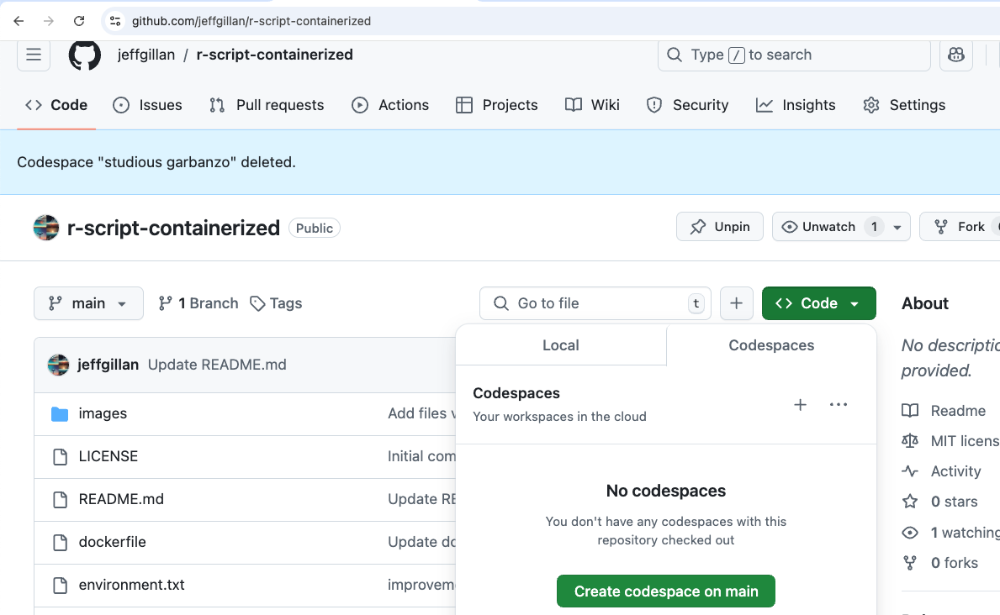
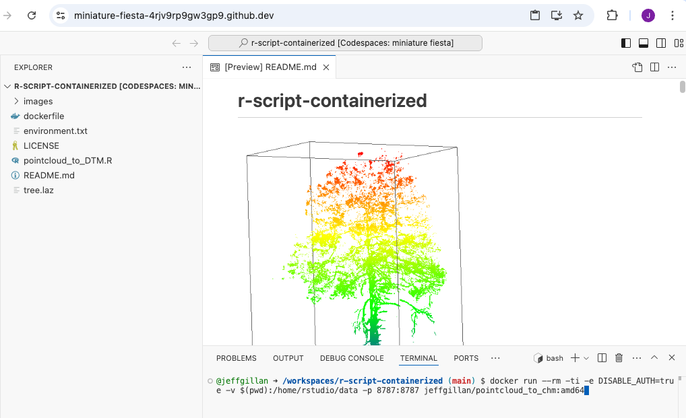
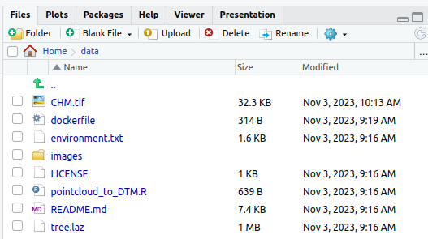

Reproducibility III: Building Docker Containers¶
Learning Objectives
After this lesson, you should be able to:
- Understand the Dockerfile structure and fields
- Build, execute and push your own Docker image
In Reproducibility II we saw how we can access and execute Docker containers. In this lesson, we continue to explore containerization, covering how we can create our own container and the various commands necessary in order to create them.
Images vs Containers¶
| Image | Container | |
|---|---|---|
| What | A snapshot of an application containing code, libraries, dependencides and files needed for the application to run |
A runtime instance of the Docker image |
| When | Created through a Dockerfile | Runtime executed after Image is created |
| Why | Reproducibility and consistency! | Reproducibility and consistency! |
| Where | Stored in an online registry (e.g., Docker Hub) | Executed on your machine |
General Workflow¶
Run an Example Container¶
The example container is located in the following Github repository https://github.com/jeffgillan/r-script-containerized. The docker container launches Rstudio where a user can run an R script to convert a point cloud to a canopy height model (CHM).

1. Launch Codespaces from the r-script-containerized repository¶

r-script-containerized repository
2. On the codespaces terminal, run the following command to run the docker container:¶
docker run --rm -ti -e DISABLE_AUTH=true -v $(pwd):/home/rstudio/data -p 8787:8787 jeffgillan/pointcloud_to_chm:amd64
Dissecting the Docker Run Command
Within the command we are doing the following:
| Flag/Option | Explanation |
|---|---|
--rm |
Automatically remove the container when it exits |
-ti |
Allocate a pseudo-TTY (terminal) connected to the container’s stdin. It gives you an interactive terminal session in the container, allowing you to run commands in the container just as you would in a regular terminal window. |
-e DISABLE_AUTH=true |
Disable authentication for the Rstudio server |
-v $(pwd):/home/rstudio/data |
Mount the current working directory to the /home/rstudio/data directory in the container. This allows us to access the data on our local machine (in this case Codespaces) from within the container. The directory is where you should have pointcloud .laz files. |
-p 8787:8787 |
Expose port 8787 on the container to port 8787 on the host machine. This allows us to access the Rstudio server from our web browser. |
jeffgillan/pointcloud_to_chm:amd64 |
The name and version number of the docker image we want to run. In this case, we are running the pointcloud_to_chm image from the jeffgillan repository in Docker Hub. |

docker run command
3. View Rstudio in a Browser¶
Open a new browser tab and navigate to localhost:8787 to access the Rstudio server running in the container. In Codespaces you can click on Ports and then Open Browser to access the Rstudio server.

4. Run the Script¶
Open the script pointcloud_to_DTM.R
Highlight all of the code and click Run

Upon completing the code, you should have a 2D plot of the tree

You should also have a new file called chm.tif in the mounted data folder. The chm.tif has been written to your local machine!

Building Docker Images¶
:max_bytes(150000):strip_icc():format(webp)/Simply-Recipes-Rainbow-Layer-Cake-Lead-3-341176ca14d545229c16ce0e20cc1a64.jpg)
Writing a Dockerfile¶
Create a file called Dockerfile, and add content to it as described below, e.g.
$ touch Dockerfile
Or, since we are using Codespaces, you can click the Create File button and name it Dockerfile
What is a Dockerfile?
A Dockerfile is a text file that contains a list of commands, known as instructions used by Docker to build an image.
If a Docker Image is a cake, the Dockerfile is the recipe!
# Tells the Dockerfile which image to start from
FROM rocker/geospatial:4.2.3
# Sets the initial working directory inside the container
WORKDIR /home/rstudio
# Copies the R script file from your localdirectory to the container
COPY pointcloud_to_DTM.R .
# Installs an R package
RUN R -e "install.packages('RCSF', dependencies=TRUE, repos='http://cran.rstudio.com/')"
#Declare the port Rstudio will run on
EXPOSE 8787
# Starts the Rstudio server
CMD ["/init"]
Dockerfile Statements¶
ARG
The only command that can come before a FROM statement is ARG
ARG can be used to set arguments for later in the build, e.g.,
ARG VERSION=latest
FROM ubuntu:$VERSION
FROM
A valid Dockerfile must start with a FROM statement which initializes a new build stage and sets the base image for subsequent layers.
We’ll start by specifying our base image, using the FROM statement
FROM ubuntu:latest
If you are building on an arm64 or Windows system you can also give the optional --platform flag, e.g.,
FROM --platform=linux/amd64 ubuntu:latest
When to use a multi-stage build pattern?
Docker has the ability to build container images from one image, and run that "builder" image from a second "base" image, in what is called a "builder pattern".
Build patterns are useful if you're compiling code from (proprietary) source code and only want to feature the binary code as an executed function in the container at run time.
Build patterns can greatly reduce the size of your container.
You can use multiple FROM commands as build stages. The AS statement follows the image:tag as a psuedo argument.
# build stage
FROM golang:latest AS build-env
WORKDIR /go/src/app
ADD . /go/src/app
RUN go mod init
RUN cd /go/src/app && go build -o hello
# final stage
FROM alpine:latest
WORKDIR /app
COPY --from=build-env /go/src/app /app/
ENTRYPOINT ./hello
LABEL
You can create labels which are then tagged as JSON metadata to the image
LABEL author="your-name"
LABEL email="your@email-address"
LABEL version="v1.0"
LABEL description="This is your first Dockerfile"
LABEL date_created="2022-05-13"
You can also add labels to a container when it is run:
$ docker run --label description="this label came later" ubuntu:latest
$ docker ps -a
$ docker inspect ###
RUN
Different than the docker run command is the RUN build function. RUN is used to create new layers atop the "base image"
Here, we are going to install some games and programs into our base image:
RUN apt-get update && apt-get install -y fortune cowsay lolcat
Here we've installed fortune cowsay and lolcat as new programs into our base image.
Best practices for building new layers
Ever time you use the RUN command it is a good idea to use the apt-get update or apt update command to make sure your layer is up-to-date. This can become a problem though if you have a very large container with a large number of RUN layers.
ENV
In our new container, we need to change and update some of the environment flags. We can do this using the ENV command
ENV PATH=/usr/games:${PATH}
ENV LC_ALL=C
Here we are adding the /usr/games directory to the PATH so that when we run the new container it will find our newly installed game commands
We are also updating the "locales" to set the language of the container.
COPY
The COPY command will copy files from the directory where Dockerfile is kept into the new image. You must specify where to copy the files or directories
COPY . /app
When to use COPY vs ADD
COPY is more basic and is good for files
ADD has some extra features like .tar extraction and URL support
CMD
The CMD command is used to run software in your image. In general use the ["command"] syntax:
CMD ["executable", "parameter1", "parameter2"]
ENTRYPOINT
ENTRYPOINT works similarly to CMD but is designed to allow you to run your container as an executable.
ENTRYPOINT fortune | cowsay | lolcat
The default ENTRYPOINT of most images is /bin/sh -c which executes a shell command.
ENTRYPOINT supports both the ENTRYPOINT ["command"] syntax and the ENTRYPOINT command syntax
What is an entrypoint?
An entrypoint is the initial command(s) executed upon starting the Docker container. It is listed in the Dockerfile as ENTRYPOINT and can take 2 forms: as commands followed by parameters (ENTRYPOINT command param1 param2) or as an executable (ENTRYPOINT [“executable”, “param1”, “param2”])
What is the difference in the ENTRYPOINT and CMD
The CMD instruction is used to define what is execute when the container is run.
The ENTRYPOINT instruction cannot be overridden, instead it is appended to when a new command is given to the docker run container:tag new-cmd statement
the executable is defined with ENTRYPOINT, while CMD specifies the default parameter
USER
Most containers are run as root meaning that they have super-user privileges within themselves
Typically, a new user is necessary in a container that is used interactively or may be run on a remote system.
During the build of the container, you can create a new user with the adduser command and set up a /home/ directory for them. This new user would have something like 1000:1000 uid:gid permissions without sudo privileges.
As a last step, the container is run as the new USER, e.g.,
ARG VERSION=18.04
FROM ubuntu:$VERSION
RUN useradd ubuntu && \
chown -R ubuntu:ubuntu /home/ubuntu
USER ubuntu
EXPOSE
You can open ports using the EXPOSE command.
EXPOSE 8888
The above command will expose port 8888.
Note
Running multiple containers using the same port is not trivial and would require the usage of a web server such as NGINX. However, you can have multiple containers interact with each other using Docker Compose.
Summary of Instructions¶
| Instruction Command | Description |
|---|---|
ARG |
Sets environmental variables during image building |
FROM |
Instructs to use a specific Docker image |
LABEL |
Adds metadata to the image |
RUN |
Executes a specific command |
ENV |
Sets environmental variables |
COPY |
Copies a file from a specified location to the image |
CMD |
Sets a command to be executed when running a container |
ENTRYPOINT |
Configures and run a container as an executable |
USER |
Used to set User specific information |
EXPOSE |
exposes a specific port |
Building the Image¶
Once the Dockerfile has been created, we can build the image using the docker build command. At the codespaces terminal, run the following command:
docker build -t <dockerhub username>/pointcloud_to_chm:amd64 .
Example:
docker build -t jeffgillan/pointcloud_to_chm:amd64 .
Dissecting the Docker Build Command
- The
-tflag allows us to tag the image with a name and version number. - In the command you need to add your own DockerHub username instead of
<dockerhub username>, which acts as the address to your own DockerHub Repository;pointcloud_to_chmis the name of the image, andamd64is the version tag. - The
.at the end of the command tells docker to look in the current directory for the dockerfile.
Executable Images¶
_____________________________
< Avoid reality at all costs. >
-----------------------------
\ ^__^
\ (oo)\_______
(__)\ )\/\
||----w |
|| ||
Thus far we have worked using interactive containers such as RStudio. Not all containers are interactive, many (if not most of) are executables: containerized software that can take the raw input and output data without requiring further work from the user.
Executable containers are usually called with
docker run <repository>/<image>:<tag> <potential arguments/options> <input file/folder>
An easy to reproduce example is Lolcow, which builds a small executable that outputs a "quote of the day". It does not require any input and will output to the terminal directly.
You can run a prebuilt Lolcow with
docker run cosimichele/lolcow:f24
Here is the minimal recipie required to build Lolcow:
FROM --platform=linux/amd64 ubuntu:22.04
RUN apt-get update && apt-get install -y fortune cowsay lolcat
ENV PATH=/usr/games:${PATH}
ENV LC_ALL=C
ENTRYPOINT fortune | cowsay | lolcat
Once built, you can execute it with docker <image ID/name> for something to brighten your day!
Pushing to a Registry with docker push¶
By default docker push will upload your local container image to the Docker Hub.
Also, make sure that your container has the appropriate tag.
First, make sure to log into the Docker Hub, this will allow you to download private images, to upload private/public images:
docker login
Alternately, you can link GitHub / GitLab accounts to the Docker Hub.
To push the image to the Docker Hub:
docker push username/imagename:tag
Exercises and Additional Dockerfiles¶
We have a number of pre-written Dockerfiles that you can access in our Intro 2 Docker Repository.
It contains:
- Alpine: a minimal Linux distribution
- Cowsay: will output wise messages when executed
- Jupyter/minimal-notebook: Jupyter Notebook accessible from your browser
- rstudio/verse: RStudio containing the Tidyverse data science packages
- Ubuntu
Clone our example repository, or work directly on the repository using Codespaces.
Clone command:
$ cd /workspaces
$ git clone https://github.com/cyverse-education/intro2docker
$ cd intro2docker/